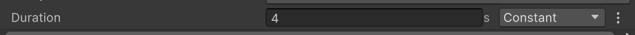
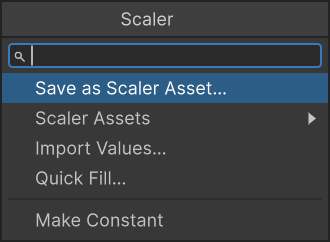

The field
A number field shows its name, its kind (Constant or another), its number or the range it gives, such as "6–8 s", and its field menu (⋮).

A constant number field: its name, its number and unit, its kind, and its menu (⋮).
The kind menu
- The kind menu files the kinds by category.
- It offers only those the field's context can work out, as its code declares with
[NumberContext]. - Where fields of several selected assets have different kinds, the kind shows as mixed. Choosing one gives it to each.
Kinds other than Constant
A kind other than Constant shows these on a shaded block under the field:
- a line of what the field reads, such as "0.3 × Target's Health (base)";
- Combine, how the field joins its number with the kind;
- a whole-number field's Rounding;
- the kind's own settings.
Messages and limits
- A field that reads its scaler and has none says it reads 0, with Make It Constant.
- A kind the field's context can't work out says so, and the field reads its number.
- A field whose unit is "%" shows and takes its number as a percentage.
- A field with limits keeps its constant within them, on a slider where they're a range.
The field menu
The field menu is the ⋮ beside the number.

A number field's menu (⋮), on a scaler that holds its own values, so it offers every item.
| Item | What it does |
|---|---|
| Save as Scaler Asset… | Saves the field's scaler as a Scaler asset, to share (Its windows). |
| Scaler Assets | A submenu of the active project's Scaler assets to share. The one shared is checked. |
| Import Values… | Copies values per level from a Scaler asset or another field. |
| Quick Fill… | Fills the field's values from a pattern. |
| Make Constant | Makes the field's kind Constant. |
Each change is one Undo step, and reaches each selected asset's own field. A scaler field of its own, such as a Group member's scaler, has the same menu.